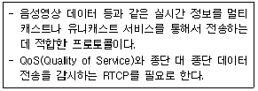
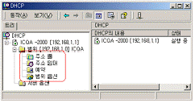
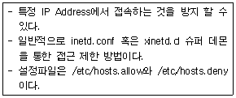

네트워크관리사-1급 (2013-04-07 기출문제)
1과목: TCP/IP
1. 패킷의 구조에서 헤더 IP 부분에 들어가는 항목으로 옳지 않은 것은?
- Version
- Total Length
- TTL(Time to Live)
- Data
(정답률: 80%)

2. DNS에 관한 설명으로 옳지 않은 것은?
- IP Address를 기억하기 힘든 단점을 극복하기 위해 만들어졌다.
- DNS 명에는 반드시 '호스트, 기관명, 기관종류, 국가명'이 모두 포함되어야 한다.
- 한국의 경우 최상위 Domain은 'kr'이다.
- 최상위에는 Root Domain이 있으며, Top Level, Second Level, Third Level의 형식으로 계층화 되어 있다.
(정답률: 75%)
3. TCP/IP 계층 중 다른 계층에서 동작하는 프로토콜은?
- IP
- ICMP
- UDP
- IGMP
(정답률: 73%)
4. SSH가 전송 계층에서 제공하는 서비스로 옳지 않은 것은?
- 무결성
- 서버 인증
- 기밀성
- 합법성
(정답률: 70%)
5. B Class의 호스트 ID에 사용 가능한 Address 개수는?
- 116,777,224개
- 65,534개
- 254개
- 126개
(정답률: 79%)
6. Telnet에 대한 설명 중 옳지 않은 것은?
- 원격접속을 하기 위한 프로토콜이다.
- 호스트 컴퓨터에 자신이 이용할 수 있는 계정(ID)이 있어야 한다.
- 포트번호는 23번을 사용한다.
- 데이터가 암호화 처리되어 전송된다.
(정답률: 70%)
7. 네트워크 ID 210.182.73.0을 6개의 서브넷으로 나누고, 각 서브넷 마다 적어도 30개 이상의 Host ID를 필요로 한다. 적절한 서브넷 마스크 값은?
- 255.255.255.224
- 255.255.255.192
- 255.255.255.128
- 255.255.255.0
(정답률: 74%)
8. IGMP에서 IP 그룹동보통신에 대한 설명 중 옳지 않은 것은?
- IP 호스트는 IP 그룹동보통신에 동적으로 언제든지 참여하거나 나갈 수 있다.
- IP 그룹동보통신의 주소는 시작지의 주소만 있지 목적지의 주소는 나타나지 않는다.
- 224.0.0.1은 예약된 주소로 그룹의 모든 호스트를 의미한다.
- 모든 그룹동보통신에서의 주소는 D Class의 IP Address에 기반을 두고 있다.
(정답률: 52%)
9. 라우팅 프로토콜이 아닌 것은?
- RIP
- PPP
- IGRP
- EGP
(정답률: 73%)
10. ICMP의 기능으로 옳지 않은 것은?
- 에러 보고 기능
- 도착 가능 검사 기능
- 혼잡 제어 기능
- 송신측 경로 변경 기능
(정답률: 73%)
11. IPv6 중 그룹 내에 가장 가까운 인터페이스를 가진 호스트 사이의 통신이 가능한 형태는?
- Unicast Type
- Anycast Type
- Multicast Type
- Broadcast Type
(정답률: 60%)
12. ARP에 대한 설명 중 올바른 것은?
- TCP/IP 프로토콜에서 데이터의 전송 서비스를 규정한다.
- TCP/IP 프로토콜의 IP에서 접속 없이 데이터의 전송을 수행하는 기능을 규정한다.
- 네트워크의 구성원에 패킷을 보내기 위하여 IP Address를 하드웨어 주소로 변경한다.
- 인터넷상에서 전자우편(E-Mail)의 전송을 규정한다.
(정답률: 82%)
13. TCP 프로토콜에 대한 설명으로 옳지 않은 것은?
- 두 호스트 사이에 믿을 수 있는 연결 지향적인 전송을 제공한다.
- 송수신되는 데이터의 흐름을 감시하고 에러를 제어한다.
- 신뢰성 있는 데이터 전송을 보장한다.
- TCP는 UDP보다 더 빨리 정보를 전송한다.
(정답률: 79%)
14. SNMP에 대한 설명 중 올바른 것은?
- TCP/IP 프로토콜의 IP에서 접속 없이 데이터의 전송을 수행하는 기능을 규정한다.
- 시작지 호스트에서 여러 목적지 호스트로 데이터를 전송할 때 사용된다.
- IP에서의 오류(Error)제어를 위하여 사용되며, 시작지 호스트의 라우팅 실패를 보고한다.
- 네트워크의 장비로부터 데이터를 수집하여 네트워크의 관리를 지원하고 성능을 향상시킨다.
(정답률: 69%)
15. IP 헤더 필드 중 단편화 금지(Don't Fragment)를 포함하고 있는 필드는?
- TTL
- Source IP Address
- Identification
- Flags
(정답률: 65%)
16. TCP 환경에서는 여러 가지 프로토콜을 지원한다. 각 프로토콜에 대해 기본적으로 지정되어 사용되고 있는 포트번호로 옳지 않은 것은?
- NNTP : 90
- TFTP : 69
- SMTP : 25
- FTP : 21
(정답률: 63%)
2과목: 네트워크 일반
17. 10Base-T 이더넷 NIC에서 사용하는 인코딩 방식은?
- NRZ-I
- NRZ-L
- Manchester
- AMI
(정답률: 64%)
18. 패킷교환방식으로 옳지 않은 것은?
- 패킷은 가변 길이를 갖는다.
- 패킷은 절대로 손실될 수 없다.
- 패킷은 단편화될 수 있다.
- 패킷은 중복될 수 있다.
(정답률: 74%)
19. 에러 검출(Error Detection)과 에러 정정(Error Correction) 기능을 모두 포함하는 기법으로 옳지 않은 것은?
- 검사합(Checksum)
- 단일 비트 에러 정정(Single Bit Error Correction)
- 해밍코드(Hamming Code)
- 상승코드(Convolutional Code)
(정답률: 47%)
20. PCM 변조 과정에 해당 되지 않는 것은?
- 세분화
- 표본화
- 양자화
- 부호화
(정답률: 71%)
21. 버스형 토폴로지의 단점에 해당되는 것은?
- 비교적 설치가 용이하다.
- 경제적이다.
- 네트워크의 트래픽이 많아 버스를 느리게 할 수 있다.
- 간단하고, 규모가 작은 경우에도 설치 용이하다.
(정답률: 80%)
22. 무선 LAN에 관한 IEEE표준은?
- IEEE 802.8
- IEEE 802.9
- IEEE 802.10
- IEEE 802.11
(정답률: 71%)
23. 다음 중 트랜스포트 계층의 주된 기능에 해당하는 것은?
- 망 종단 간 데이터의 전달
- 링크 간 프레임 전송
- 노드 간 패킷 전송
- 물리매체에 비트 열 전송
(정답률: 61%)
24. Token Ring 기법을 발전시킨 것으로 '이중 링' 구조를 가지는 것은?
- Token Bus
- FDDI
- Gigabit Ethernet
- ATM
(정답률: 59%)
25. 광대역 전송 방식에 대한 설명으로 옳지 않은 것은?
- 아날로그 신호를 전송한다.
- 광케이블을 사용하여 고속 전송이 가능하다.
- 시분할 다중화 방식을 통해 독립적인 채널을 가질 수 있다.
- 음성, 영상, 데이터 등을 동시에 전송할 수 있다.
(정답률: 25%)
26. Fast Ethernet에서 최종 사용자에 연결된 스위치 포트에 자동 협상(Auto Negotiation)을 사용할 것을 권장하는 이유로 올바른 것은?
- 서버나 라우터에 비해 자주 이동하기 때문임
- 서버나 라우터에 비해 속도가 느리기 때문임
- 서버나 라우터에 비해 고장의 원인이 일어나기 쉽기 때문임
- 서버나 라우터에 비해 주파수가 높기 때문임
(정답률: 66%)
27. 다음 설명에 알맞은 프로토콜은?

- TCP(Transmission Control Protocol)
- SIP(Session Initiation Protocol)
- RSVP(ReSouece reserVation Protocol)
- RTP(Real-time Transfer Protocol)
(정답률: 66%)
3과목: NOS
28. NTFS의 특징으로 옳지 않은 것은?
- FAT, HPFS 파일 시스템보다 더 큰 파일과 파티션 사이즈를 지원한다.
- 파일과 디렉터리의 압축을 지원한다.
- POSIX 요구사항을 지원한다.
- Linux에서 기본적으로 지원하므로, 호환성이 뛰어나다.
(정답률: 56%)
29. Windows 2003 Server에서 동적 디스크의 특징으로 옳지 않은 것은?
- 디스크에 대한 모든 구성 정보가 디스크에 저장된다.
- 디스크의 설정 정보가 그 디스크 자체에 저장된다.
- 볼륨이 연속되지 않은 디스크 영역으로 확장이 가능하다.
- 기본 파티션과 확장 파티션으로 나뉜다.
(정답률: 49%)
30. 호스트 헤더방식을 사용하여 2개의 가상 서버를 설정할 경우 필요한 최소 IP Address 수는?
- 1개
- 2개
- 3개
- 가상서버를 설정할 수 없음
(정답률: 55%)
31. Linux에서 보통 실행 파일들이 모두 모여 있는 디렉터리는?
- /root
- /bin
- /boot
- /home
(정답률: 69%)
32. DNS의 레코드에 대한 설명으로 올바른 것은?
- SOA 레코드는 새로 등록하거나 삭제할 수는 없고 정보만 읽고, 수정할 수 있다.
- A 레코드는 도메인 위임이라는 기능을 구현하기 위해 사용된다.
- CNAME 레코드는 'Alias'라고도 한다.
- PTR 레코드는 호스트 대 IP를 등록하며, 일반 영역에 사용된다.
(정답률: 34%)
33. 마운트에 대한 설명으로 올바른 것은?
- Linux에서 CD-ROM은 마운트 하지 않고 바로 사용할 수 있다.
- 플로피 디스크드라이브는 '#mount -t iso9660/dev/fd0/ mnt/floppy'와 같은 방법으로 마운트 시킨다.
- 마운트를 해제하는 명령어는 'unmount'이다.
- 해당 파일시스템이 사용 중이면 'mount'가 해제되지 않는다.
(정답률: 56%)
34. Windows 2003 Server에서 www.icqa.or.kr의 IP Address를 얻기 위한 콘솔 명령어는?
- ipconfig www.icqa.or.kr
- netstat www.icqa.or.kr
- find www.icqa.or.kr
- nslookup www.icqa.or.kr
(정답률: 73%)
35. Linux 시스템에서 '-rwxr-xr-x'와 같은 퍼미션을 나타내는 숫자는?
- 755
- 777
- 766
- 764
(정답률: 68%)
36. Windows 2003 Server에서 DNS와 비슷하게 NetBIOS 이름을 IP Address에 맵핑하는 기능을 지원하는 서비스는?
- WINS
- HTTP
- Proxy
- SNMP
(정답률: 62%)
37. Linux의 'vi' 명령어 중 변경된 내용을 저장한 후 종료하고자 할 때 사용해야 할 명령어는?
- :wq
- :q!
- :e!
- $
(정답률: 72%)
38. Windows 2003 Server에서 DHCP를 사용해 IP Address가 동적으로 할당되도록 하였다. 필요에 의해 특정 클라이언트가 특정 IP Address를 할당 받게 하기 위해서는 아래의 어느 메뉴 항목에서 설정해야 하는가?

- 주소 풀
- 주소 임대
- 예약
- 범위 옵션
(정답률: 47%)
39. SOA 레코드에서 2차 네임서버가 1차 네임서버에 접속하여 Zone의 변경 여부를 검사할 주기에 해당되는 세부 설정 항목은?
- Serial
- Refresh
- Retry
- Expire
(정답률: 58%)
40. Windows 2003 Server의 Active Directory 특성으로 올바른 것은?
- DNS와 독립적으로 동작한다.
- LDAP를 사용하는 다른 디렉터리 서비스와 호환되지 않는다.
- 그룹 정책을 기반으로 GPO에 해당 그룹 사용자가 가지고 있는 권한이 명시되어 있다.
- 글로벌 카탈로그는 자기 도메인 내의 모든 정보를 가지고 있다.
(정답률: 47%)
41. httpd.conf 파일을 사용하여 Apache 웹 서버를 설정하려 한다. 주요 설정 항목에 대한 설명으로 옳지 않은 것은?
- ServerRoot : 아파치 웹서버의 각종 설정 파일이 있는 디렉터리를 지정한다.
- Listen : 아파치 웹서버가 사용할 기본 포트(80번)를 설정한다.
- DocumentRoot : 웹사이트에 사용될 각종 파일들이 위치한 디렉터리를 지정한다.
- ServerType : 서버의 실행 방법을 지정하며, Single Mode와 Multi Mode가 있다.
(정답률: 62%)
42. Windows 2003 Server의 사용자 계정에 대한 설명으로 옳지 않은 것은?
- 도메인 사용자 계정은 해당 도메인에 로그온 하면 네트워크내의 모든 컴퓨터에 접근 할 수 있다.
- 로컬 사용자 계정은 해당 컴퓨터에만 접근 할 수 있다.
- Guest 계정을 사용하여 도메인 사용자 계정을 만들 수 있다.
- 도메인에서 사용하는 사용자 계정은 디렉터리 전체에서 유일해야 한다.
(정답률: 52%)
43. Linux와 다른 이기종의 파일 시스템이나 프린터를 공유하기 위해 설치하는 서버 및 클라이언트 프로그램은?
- 삼바(SAMBA)
- 아파치(Apache)
- 센드메일(Sendmail)
- 바인드(BIND)
(정답률: 73%)
44. Windows 2003 Server에서 웹 사이트 'A'와 'B'를 한 대의 서버에 호스팅 하려고 하여, 부여받은 하나의 IP Address에 홈 디렉터리와 TCP 포트, DNS를 각각 설정하였다. 그런데 사용자가 'B' 사이트에 접속하면 'A' 사이트에 접속이 될 때, 이 문제를 해결하기 위한 방법으로 올바른 것은?
- 'A' 사이트 DNS 정보가 잘못되어 발생된 경우로, 'A'사이트의 DNS 정보를 IIS에 수정한다.
- 'A' 사이트의 홈 디렉터리가 잘못된 경우로, 'A' 사이트의 홈디렉터리를 확인하여 수정한다.
- 'B' 사이트의 호스트 헤더가 설정이 안 된 경우 발생될 수 있으므로, 'B' 사이트의 호스트 헤더를 설정한다.
- 'B' 사이트에 익명으로 접속할 수 없어서 발생된 경우로, 'B' 사이트의 접속을 익명으로 바꾼다.
(정답률: 49%)
45. Linux 시스템에서 사용자 계정의 정보를 수정하는 명령어는?
- usermod
- config
- profile
- passwd
(정답률: 56%)
4과목: 네트워크 운용기기
46. 환경 변화에 실시간 조정을 하며 문제 해결과 트래픽 최적화를 자동으로 수행하는 라우팅 방식은?
- 정적(Static)라우팅 프로토콜
- 동적(Dynamic)라우팅 프로토콜
- 최적화 라우팅 프로토콜
- 실시간 라우팅 프로토콜
(정답률: 65%)
47. 라우터(Router)는 OSI 7 Layer 중 어느 계층에서 동작하는가?
- Physical Layer
- DataLink Layer
- Network Layer
- TCP/IP Layer
(정답률: 70%)
48. 네트워크 인터페이스 카드(NIC)에 대한 설명으로 옳지 않은 것은?
- OSI 7 Layer 중 4 계층 장비이다.
- 케이블을 통해 데이터 전송을 하기 위한 장치이다.
- 병렬 데이터를 받아 직렬로 전송한다.
- 고유한 네트워크 어드레스인 MAC Address가 있다.
(정답률: 65%)
49. LAN 카드의 MAC Address에 실제로 사용하는 비트 수는?
- 16bit
- 32bit
- 48bit
- 64bit
(정답률: 42%)
50. 최적의 경로를 결정하기 위해 사용되는 메트릭 속성의 예로 옳지 않은 것은?
- 회선의 최대 전송속도(Bandwidth)
- 라우터의 종류(Vendor)
- 목적지까지의 홉 수(Hop Count)
- 회선 사용량(Load)
(정답률: 72%)
5과목: 정보보호개론
51. Linux 시스템에서 아래 내용이 설명하는 것은?

- TCP_Wrapper
- PAM
- SATAN
- ISSm
(정답률: 52%)
52. 공개키 기반구조(PKI)에 대한 기술로 옳지 않은 것은?
- PKI는 공개키 인증서에 바탕을 두고 구축되어야 한다.
- CA(Certificate Authority)는 최종 개체(End Entity)를 인증하는 전자증명서 발행 역할을 수행한다.
- PKI는 사용자 공개키와 사용자 ID를 안전하게 묶는 방법과 공개키를 신뢰성 있게 관리하기 위한 수단을 제공한다.
- CA의 공개키는 자동적으로 사용자에게 전달되지 않기 때문에 인증서를 사용할 때마다 CA에게 CA의 공개키를 요구하여야 한다.
(정답률: 59%)
53. 침입탐지시스템(IDS: Intrusion Detection System)에 대한 설명으로 옳지 않은 것은?
- IDS는 공격의 증거를 찾기 위해 네트워크 트래픽을 분석하고, 침해 여부를 보기 위하여 액세스 로그들을 조사하고 파일들을 분석하기도 한다.
- IDS의 형태로는 NIDS, HIDS, SIV, LFM 등이 있다.
- IDS의 한 형태인 HIDS는 중요한 시스템 파일의 흔적을 유지하고 변경되었는지 감시한다.
- IDS는 위조된 서비스를 제공하여 해커를 유인, 혼란스럽게 하는 가짜 네트워크인 Honeypot으로 개념을 확장하고 있다.
(정답률: 50%)
54. 시스템의 침투 형태 중 네트워크의 한 호스트에서 실행되어 다른 호스트들의 패킷 교환을 엿듣는 해킹 유형은?
- Sniffing
- IP Spoofing
- Domain Spoofing
- Repudiation
(정답률: 54%)
55. 방화벽(Firewall)에 대한 설명으로 옳지 않은 것은?
- 네트워크 출입로를 다중화하여 시스템의 가용성을 향상시킨다.
- 외부로부터 불법적인 침입이나 내부로부터의 불법적인 정보 유출을 방지하는 기능을 담당한다.
- 외부로부터의 공격을 막는 역할만해서, 내부에서 행해지는 해킹 행위에는 방화벽 기능이 사용되지 못할 수도 있다.
- 방화벽에는 역 추적 기능이 있어, 외부에서 네트워크에 접근 시, 그 흔적을 찾아 역추적이 가능하다.
(정답률: 75%)
56. 다음 중 암호기술 서비스로 옳지 않은 것은?
- 기밀성
- 분별성
- 부인봉쇄
- 인증
(정답률: 58%)
57. 회사의 사설 네트워크와 외부의 공중 네트워크 사이에 중립 지역으로 삽입된 소형 네트워크를 의미하는 용어는?
- DMZ
- Proxy
- Session
- Packet
(정답률: 70%)
58. S/MIME에 대한 설명으로 옳지 않은 것은?
- 전자우편 보안 서비스로, HTTP에서는 사용이 불가능하다.
- X.509 형태의 S/MIME 인증서를 발행하여 사용한다.
- 전자 서명과 암호화를 동시에 사용할 수 있다.
- 대칭키 암호 알고리즘을 사용하여 전자우편을 암호화 한다.
(정답률: 58%)
59. 웹 브라우저, 웹 서버 간에 데이터를 안전하게 교환하기 위한 프로토콜로서, 웹 제품뿐 아니라 FTP나 Telnet 등 다른 TCP/IP 애플리케이션에 적용할 수 있는 보안기술은?
- SET
- SSL
- PPTP
- PGP
(정답률: 65%)
60. 외부 WAN과 접속되는 네트워크에 인터넷 보안 및 웹 캐싱 기능을 적용하려고 할 때 가장 적당한 서비스는?
- NAT
- IPsec
- ICS
- Proxy
(정답률: 49%)